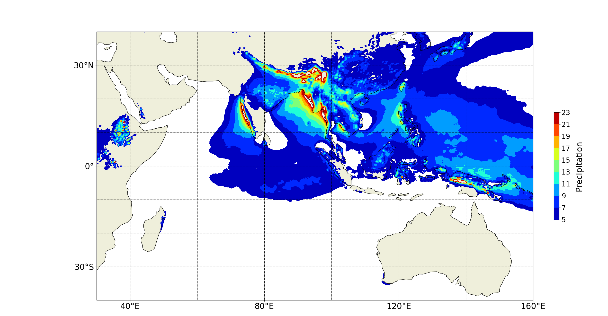

Cyclones &
ocean interactions
Using COAWST to investigate cyclone formation, intensification, and propagation.
Explore COAWSTOcean · Atmosphere · Climate
Research in ocean–atmosphere interactions, climate change, and variability. Bringing coupled models and machine learning to complex climate questions.
A view of the climate
The ocean and atmosphere are studied together to explore climate variability and changing environmental conditions.
View full-size figure
Research directions
Using COAWST to investigate cyclone formation, intensification, and propagation.
Explore COAWSTExploring ocean–atmosphere coupling and the relationship between MJO and cyclonic activity.
Explore regional modellingInvestigating spatial patterns and temporal dependencies in ocean and atmospheric data.
Explore climate researchStart a conversation
Get in touch about ocean–atmosphere modelling and climate science.